⋆˙⟡ Sobre Mim
Oi! Meu nome é Júlia, mas sou mais conhecida por Julinha. Gosto muito de ler, estudar, programar, estar com minha família e amigos, e AMO jogar handebol! Nesta página você verá um pouquinho da minha vida e do meu lifestyle.
₊⊹ Habilidades
₊⊹ Álbum de fotos Intercampi 2025
Os Jogos Intercampi Estudantis 2025 - fase polos, ocorreu dos dias 16/06/25 à 18/06/25, e deixou memórias muito marcantes! Aqui está um pequeno carrossel de fotos dessa fase. Partiu Mossoró! :D
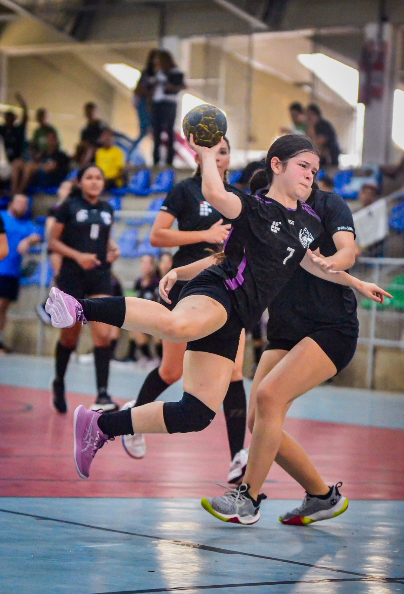
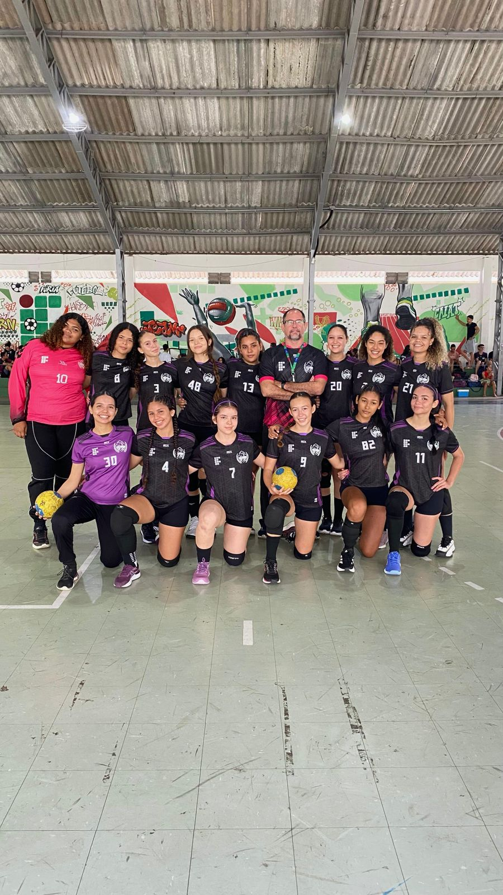
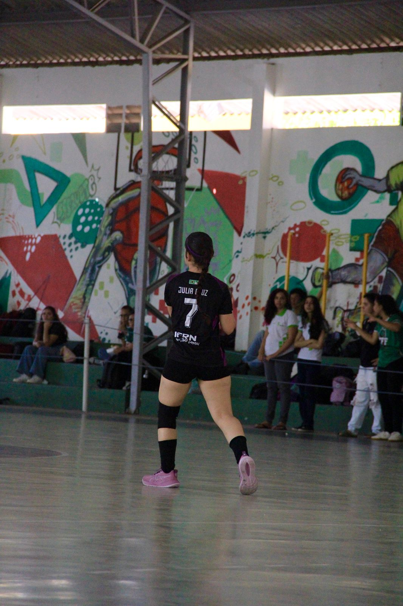
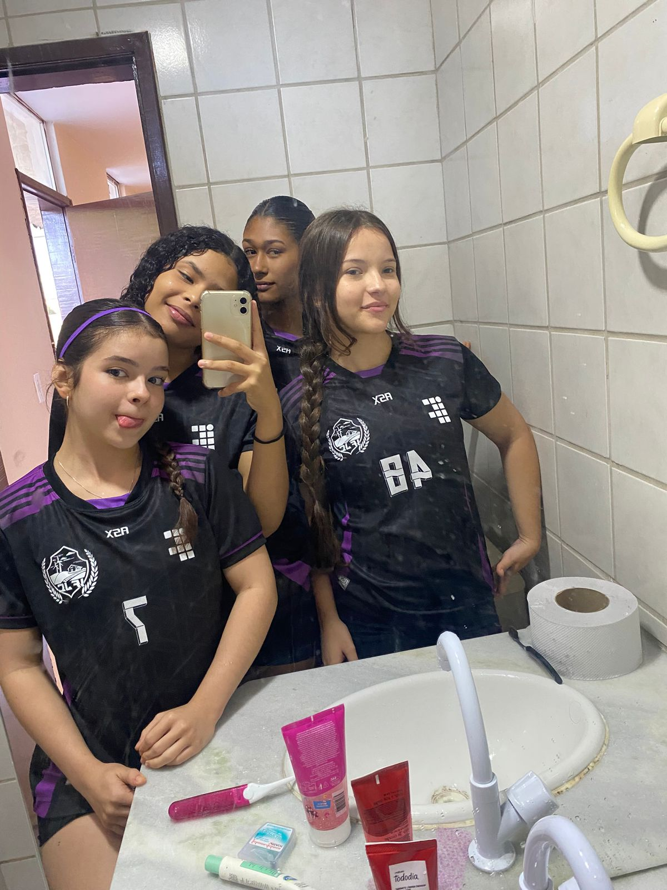
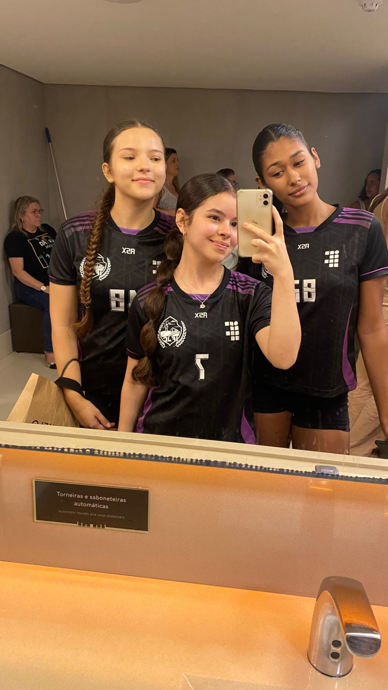
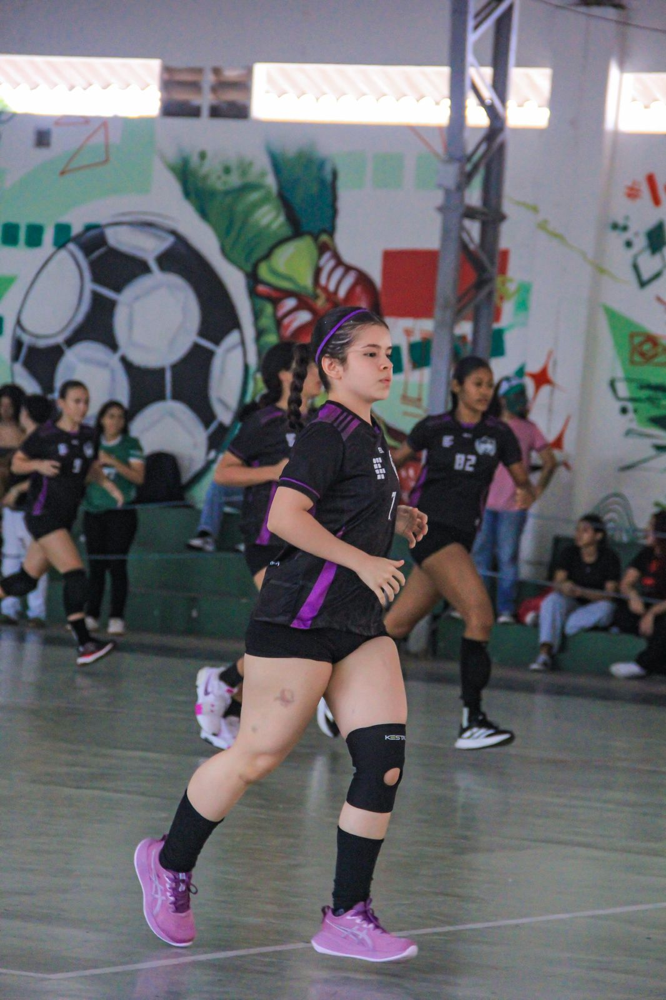
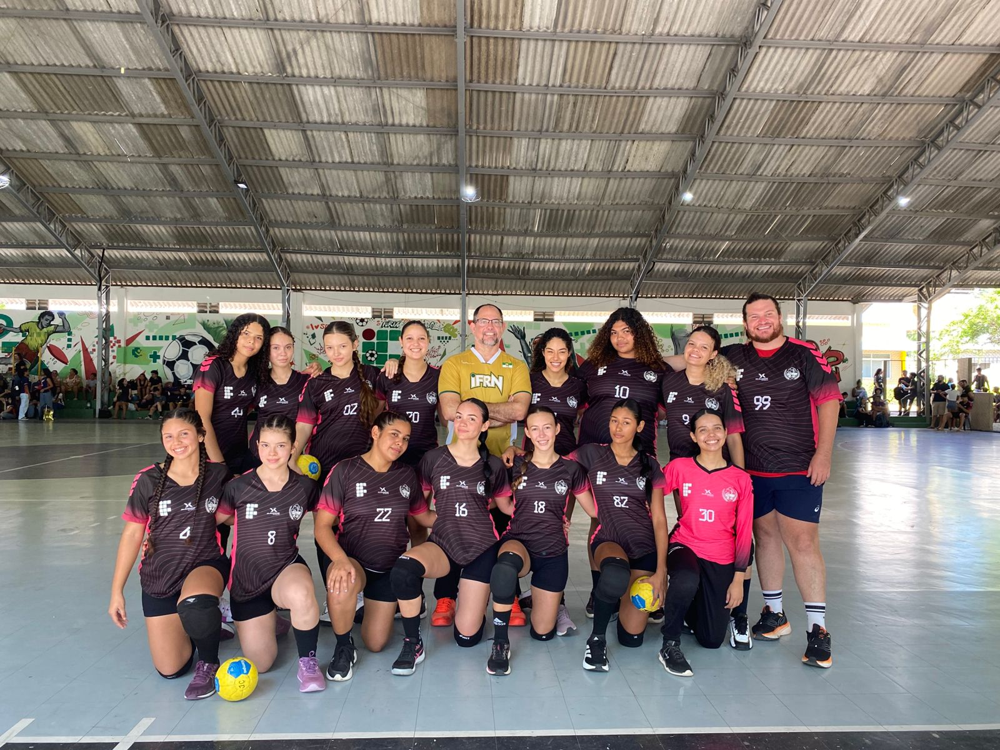
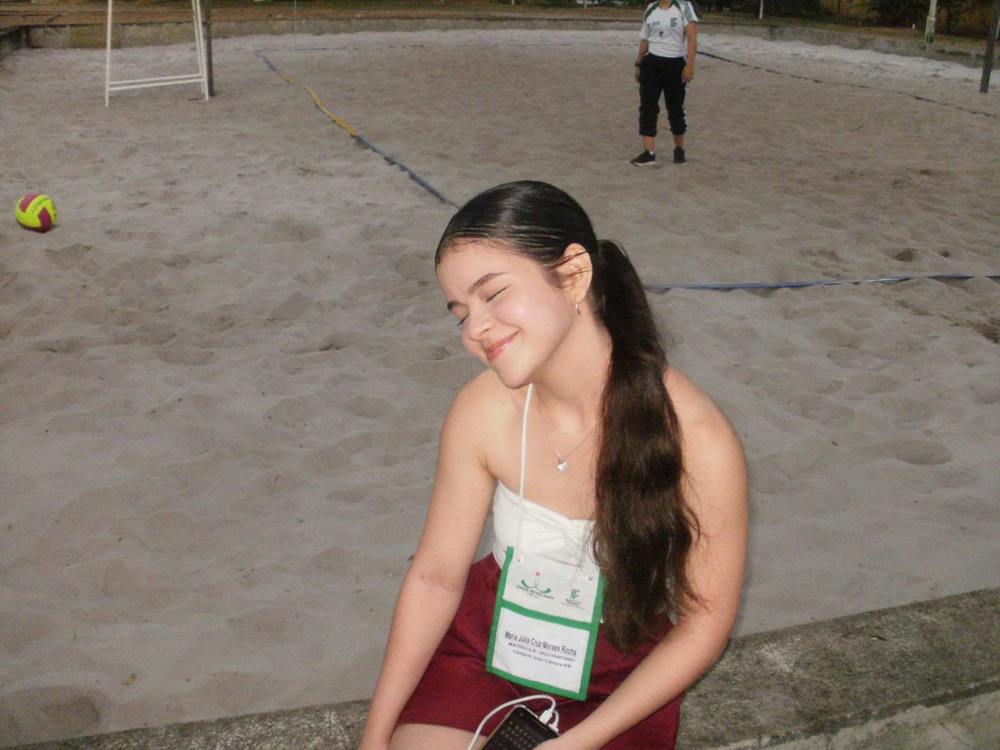
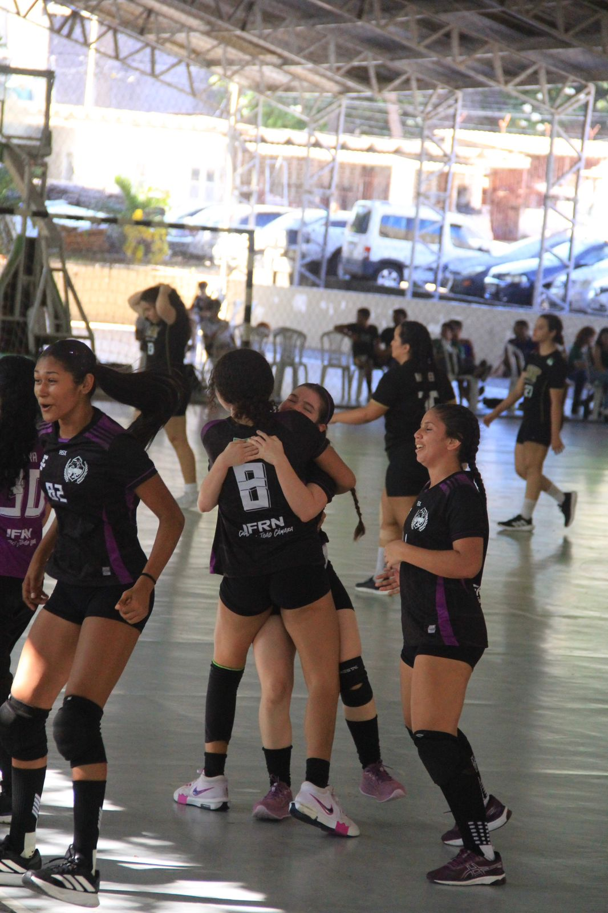
₊⊹ Livros Preferidos
Alguns dos meus livros prediletos! Ah, e me siga no Skoob


₊⊹ Hobbys
₊⊹ Séries Preferidas
Algumas das minhas séries preferidas! Eu tenho tantas que poderia passar o dia falando sobre cada uma delas!
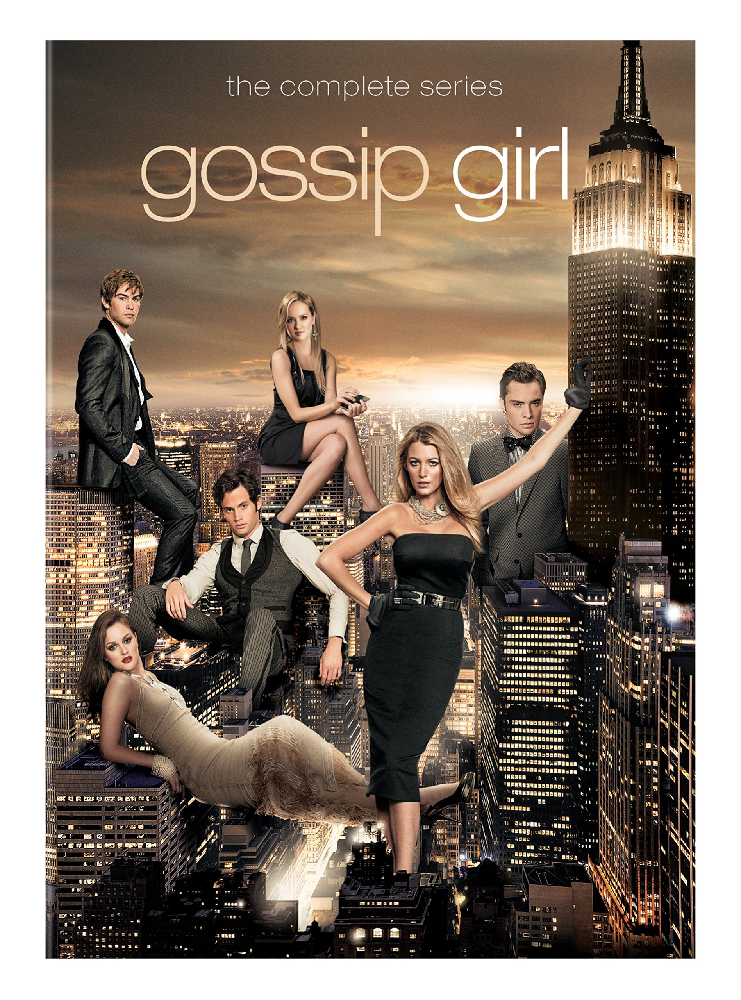
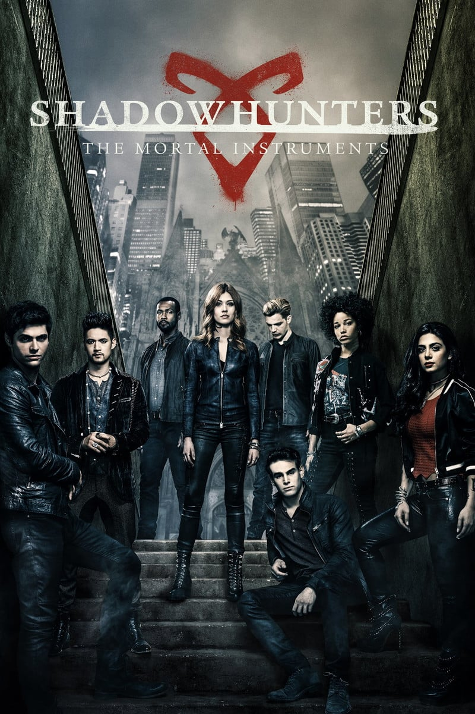